Методы математического моделирования в кибербезопасности. Практикум
Коняева Марина Александровна
НФИмд-01-25
Студ. билет: 1032259383
2026
Освоить методы построения и анализа графов атак для оценки уязвимостей сетевой инфраструктуры. На примере моделирования атак на корпоративную сеть изучить:
Граф атак — это ориентированный граф, в котором вершины представляют состояния системы (узлы сети, привилегии), а рёбра — действия атакующего по переходу между состояниями. В упрощённой модели:
Задача анализа графа атак сводится к нахождению всех путей от источника (злоумышленник) к цели (критический актив).
Для выявления критичных узлов используются следующие метрики:
using Pkg
Pkg.activate(".")
Pkg.add("DrWatson")
Pkg.add("Distributions")
Pkg.add("Plots")
Pkg.add("StatsPlots")
Pkg.add("DataFrames")
Pkg.add("JLD2")
Pkg.add("Random")
Pkg.add("Statistics")
Pkg.add("CSV")
Pkg.add("HypothesisTests")Создадим отдельный файл src/attack_graph.jl. Это основной модуль, используемый всеми скриптами.
Результатом работы функций являются граф, все найденные пути атаки, метрики центральности, веса рёбер и наиболее вероятный путь.
Создание файла scripts/ag_run_experiment.jl.
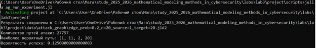
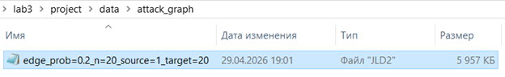
Создадим файл scripts/ag_analyze.jl.
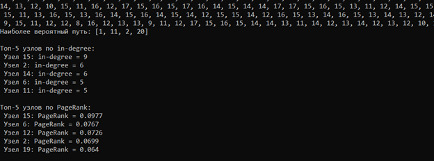
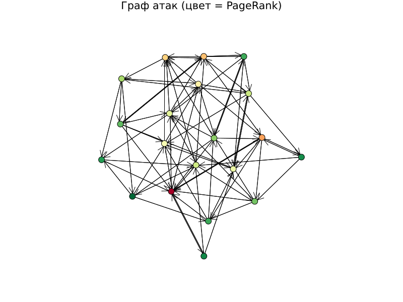
Создадим файл scripts/ag_convergence.jl.
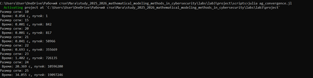
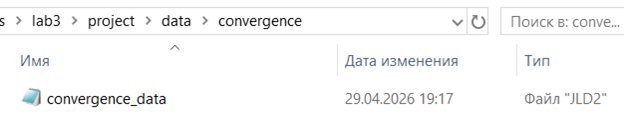
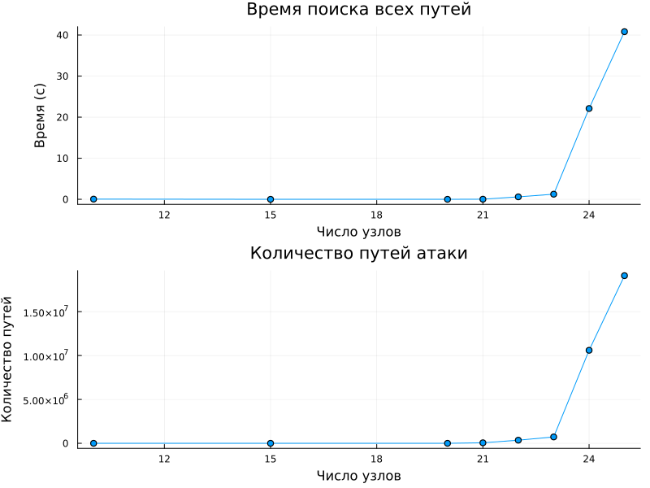
Создадим файл scripts/parameter_sweep.jl.
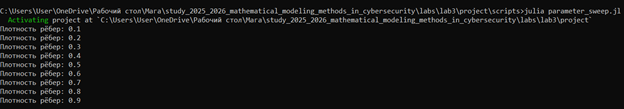
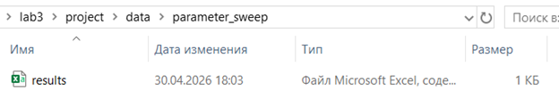
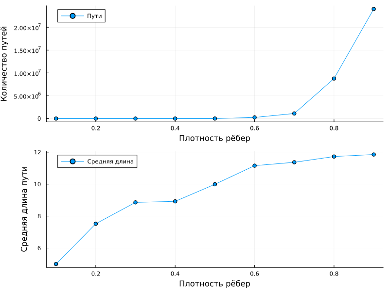
Добавили в граф атак веса уязвимостей (CVSS) и найшли наиболее вероятный путь с помощью алгоритма Дейкстры (с учётом логарифмов вероятностей).
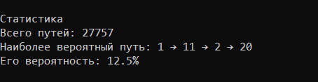
Выполним дополнительное задание 2: реализовали модель распространения атаки с использованием агентного подхода.
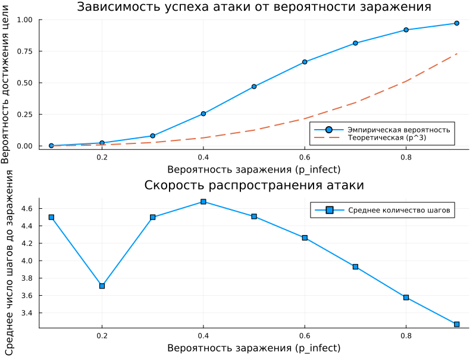
Выполним дополнительное задание 3: сравнить разные метрики центральности и определить, какие из них лучше предсказывают узлы, наиболее уязвимые для атак.
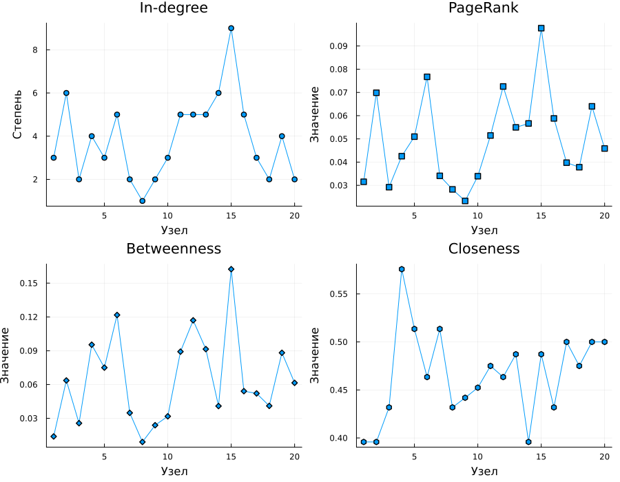
Выполним дополнительное задание 4: использовать реальные данные о топологии сети (например, из датасетов сетей) для построения графа атак.
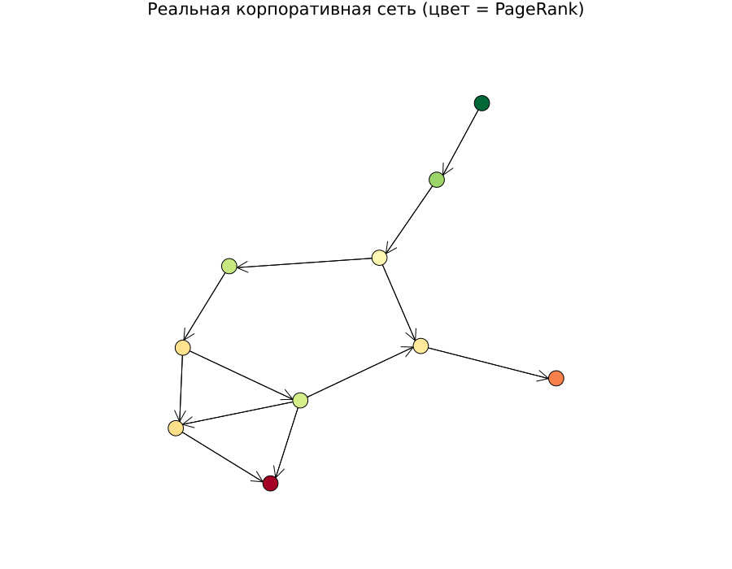
Выполним дополнительное задание 5: визуализировать граф с помощью интерактивных библиотек (например, GraphPlot с возможностью наведения).
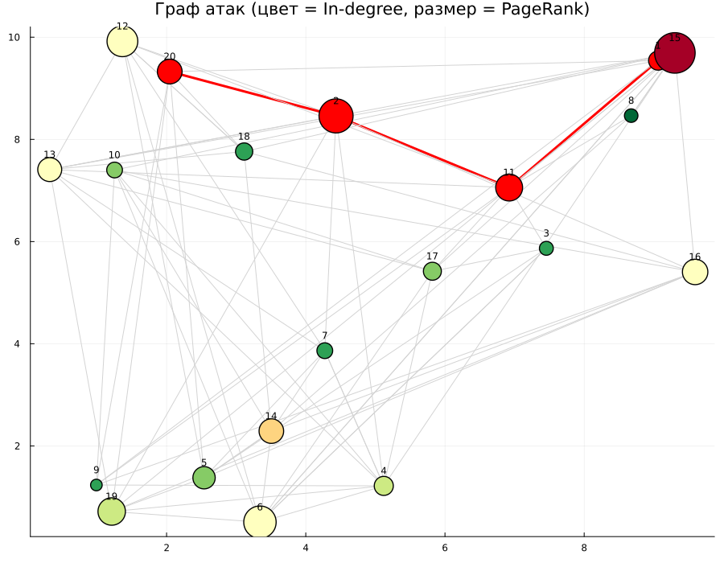
Выполним дополнительное задание 6: оценить эффективность защитных мер (например, изоляция узла с высокой betweenness centrality) на снижение числа путей атаки.
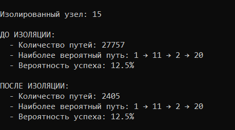
Ответили на все контрольные вопросы лабораторной работы.
В ходе выполнения лабораторной работы были освоены методы построения и анализа графов атак. Были выполнены все задания лабораторной работы, также дополнительные и ответили на все контрольные вопросы.